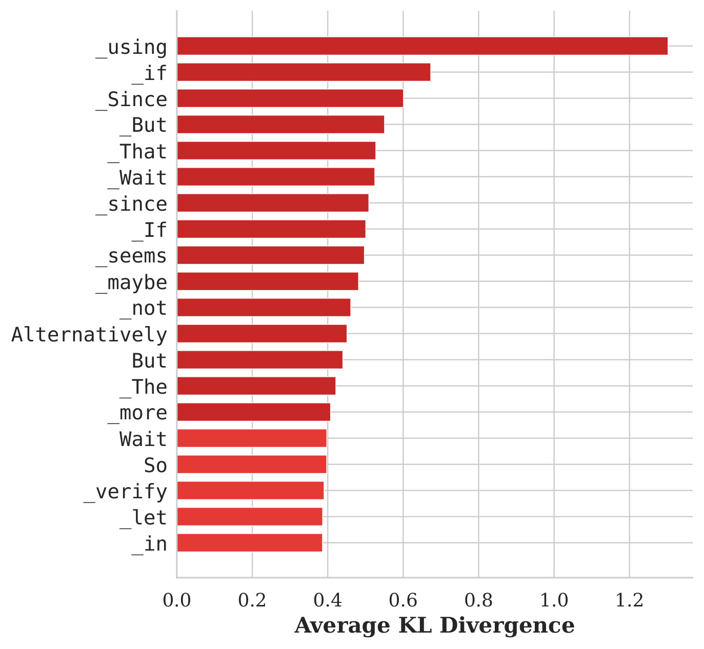
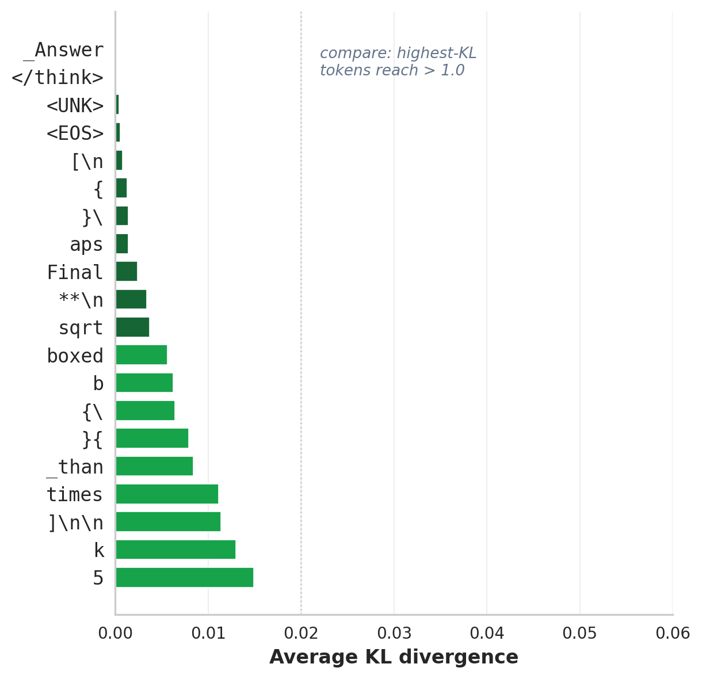

Quantized models diverge from full precision ones at branching positions
To understand how quantization increases overthinking errors, we measure token level KL divergence between the output distributions of the BF16 and 3 bit AWQ models. We treat the full precision model as a reference and run both models on the same MATH-500 prompts under identical generation prefixes to isolate the effects of quantization. At each decoding position $t$, we compute the KL divergence $D_{\mathrm{KL}}(p_t \,\|\, q_t) = \sum_{v \in \mathcal V} p_t(v) \log \frac{p_t(v)}{q_t(v)}$, where $p_t$ and $q_t$ are the next token distributions of the full precision and quantized models. A large KL at position $t$ means the two models disagree sharply about what to say next. We then associate each KL value with the token the quantized model sampled at that position and compute, for each unique token in the vocabulary, its average KL across all positions where it was sampled, filtering to tokens appearing at least 50 times.
What we mean by a high entropy position. At a high entropy position, the full precision model spreads probability across many roughly comparable next token candidates rather than concentrating it on one. Low entropy positions are the opposite: one token, such as a digit, operator, or the next step of an arithmetic chain, dominates the distribution. This distinction matters because quantization most affects positions where the reference model is already locally uncertain, with a small logit margin.



Quantization disproportionately affects overthinking markers at high entropy positions
- The tokens where the quantized and full precision models diverge the most are overthinking markers such as “Wait”, “But”, “Alternatively”, “if”, “maybe”, “verify”, “think”. Many of these open a new reasoning path and signal the model's hesitation.
- The tokens where the two models agree most closely are mathematical and formatting tokens. Quantization barely changes how the model samples these execution tokens. Note the x axis range: low KL values are nearly 100× smaller than high KL values (the largest low KL value is around 0.015, while the largest high KL value is around 1.30).
- Position level KL divergence correlates strongly with the BF16 model's next token entropy (Spearman ρ = 0.92), confirming that quantization most affects positions where the model is already uncertain.
Two things happen at once at high entropy positions. First, the logit gap between the top token and an overthinking marker like “Wait” is small, so even a moderate perturbation to the logits can flip which token is sampled. Second, overthinking markers are 2 to 4× more likely to appear among the top 20 most probable tokens at high entropy positions than at low entropy ones. Because these positions are inherently uncertain, quantization noise has a larger effect on the output distribution, and we are more likely to see the quantized model sample a “Wait” or “But”, open a new reasoning branch, and overwrite the correct intermediate answer it had already found.
We also compute the density of high KL and low KL tokens relative to total CoT length. In BF16, low KL math tokens appear at a higher rate than high KL overthinking markers (ratio 0.57). Under 3 bit AWQ, this ratio flips to 1.15: high KL tokens outnumber low KL tokens, so the quantized model produces more overthinking markers per unit of reasoning than mathematical content. This shift in token composition is how quantization leads to less efficient reasoning.